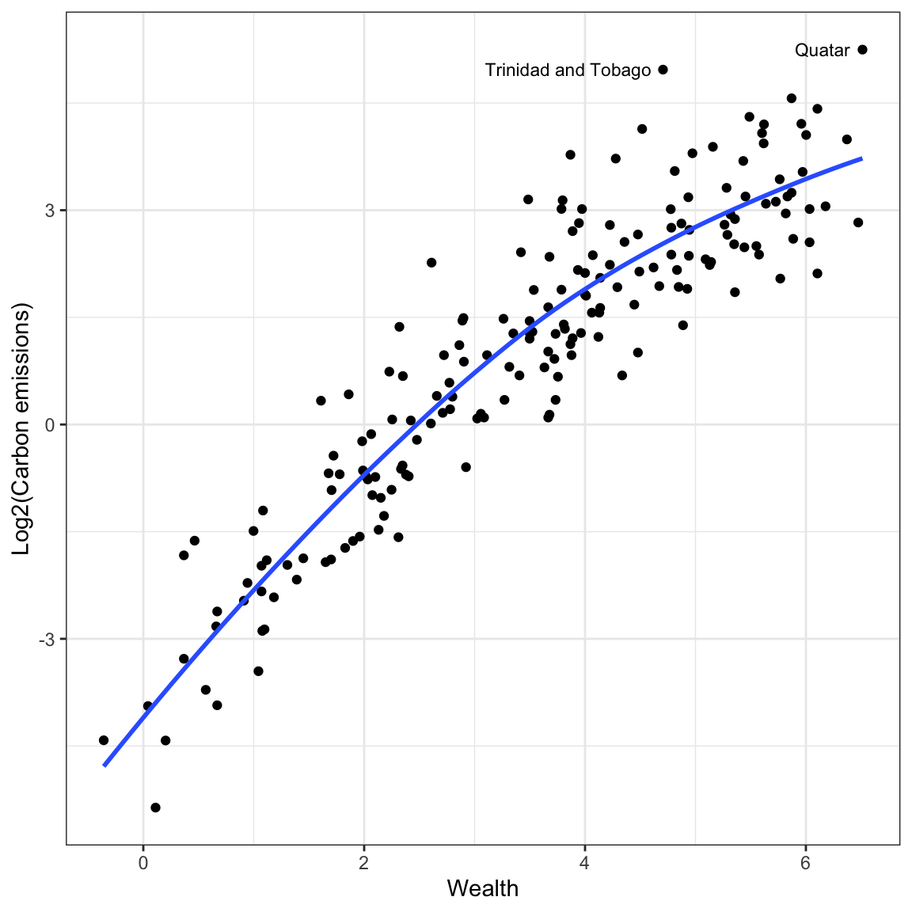
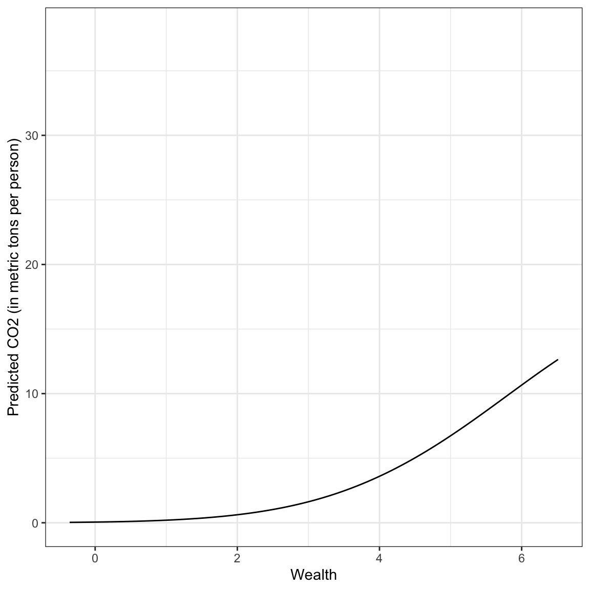

In this set of notes, you will learn another method for dealing with nonlinearity. Specifically, we will look at log-transforming the outcome in a linear model. This transformation can also help rectify violations of the normality and homogeneity of variance assumptions. To do so, we will use the carbon.csv dataset. (See data codebook.)
Our analytic goal will be to explain variation in worldwide carbon emissions. Specifically:
What is the effect of a country’s wealth on carbon emissions?
Does this effect persist after controlling for urbanization?
Does this relationship vary between world regions?
Within this work, we will use information theoretic approcaches (namely the AICc and related measures) to evaluate any fitted models.
# A tibble: 189 × 5
country region co2 wealth urbanization
<chr> <chr> <dbl> <dbl> <dbl>
1 Afghanistan Asia 0.254 1.07 3.35
2 Albania Europe 1.59 3.75 1.32
3 Algeria Africa 3.69 3.54 2.81
4 Angola Africa 1.12 2.71 4.31
5 Antigua and Barbuda Americas 5.88 4.36 0.432
6 Argentina Americas 4.41 4.49 1.15
7 Armenia Europe 1.89 3.72 0.309
8 Australia Oceania 16.9 5.60 1.66
9 Austria Europe 7.75 5.82 0.836
10 Azerbaijan Europe 3.7 3.79 1.47
# ℹ 179 more rows
11.1 Relationship between Wealth and Carbon Emissions
To being the analysis, we will examine the marginal distributions of wealth (predictor) and carbon emissions (outcome), as well as a scatterplot between them for our sample data.
# Marginal distribution of co2 (outcome)p1 =ggplot(data = carbon, aes(x = co2)) +geom_density() +theme_bw() +xlab("Carbon emissions (metric tons per person)") +ylab("Probability density")# Marginal distribution of wealth (predictor)p2 =ggplot(data = carbon, aes(x = wealth)) +geom_density() +theme_bw() +xlab("Wealth") +ylab("Probability density")# Scatterplotp3 =ggplot(data = carbon, aes(x = wealth, y = co2)) +geom_point() +geom_smooth(se =FALSE) +theme_bw() +xlab("Wealth") +ylab("Carbon emissions (metric tons per person)") +annotate(geom ="text", x =6.4, y =38, label ="Quatar", size =3, hjust =1) +annotate(geom ="text", x =4.6, y =31.3, label ="Trinidad and Tobago", size =3, hjust =1) # Place figures side-by-side(p1 / p2) | p3
Figure 11.1: Density plot of the distribution of carbon dioxide emissions (LEFT) and wealth (CENTER). The scatterplot (RIGHT) shows the relationship between wealth and carbon dioxide emissions. The loess smoother (blue line) is also displayed on the scatterplot. Two countries having extreme CO2 emissions are also identified.
The distribution of CO2 emissions is severely right-skewed. Although the median emissions is around 2.5 metric tons per person, the plot shows evidence that several countries have high emissions. The distribution of wealth is more symmetric (perhaps a little left-skewed), with most countries having a weath level around 3.5.
The scatterplot suggests a positive, nonlinear relationship between wealth and CO2 emissions; countries that are wealthier also tend to have higher CO2 emissions. It also suggests that there is more variation in CO2 emissions at higher levels of wealth than at lower levels of wealth—potential violation of the homoskedasticity assumption. The curvilinear relationship between wealth and carbon emissions suggests that we may want to include a quadratic effect of wealth in the model. We fit both a linear and quadratic model and show the residual plots for both models in Figure 11.2.
#|fig-alt: "Density plot of the standardized residuals (LEFT) and scatterplot of the standarized residuals versus the fitted values (RIGHT) from regressing CO2 emissions on wealth in a linear model (TOP) and in a model that includes a quadratic effect of wealth (BOTTOM). The reference line of Y=0 is also displayed in the scatterplot along with the 95% confidence envelope (grey shaded area). The loess smoother (solid, blue line) shows the empirical relationship betwen the residuals and fitted values."#| fig-width: 8#| fig-height: 4#| out-width: "80%"# Fit modellm.1=lm(co2 ~1+ wealth, data = carbon)lm.2=lm(co2 ~1+ wealth +I(wealth^2), data = carbon)# Obtain residual plotsresidual_plots(lm.1) /residual_plots(lm.2)
Figure 11.2: Density plot of the standardized residuals (LEFT) and scatterplot of the standarized residuals versus the fitted values (RIGHT) from regressing CO2 emissions on wealth in a linear model (TOP) and in a model that includes a quadratic effect of wealth (BOTTOM). The reference line of Y=0 is also displayed in the scatterplot along with the 95% confidence envelope (grey shaded area). The loess smoother (solid, blue line) shows the empirical relationship betwen the residuals and fitted values.
The plots from the linear model show clear violations of almost every assumption. By including a quadratic effect of wealth in the model, we have mitigated the “linearity” assumption; the average residual is 0 in this model. However, the residual plots still suggest violations of the normality assumption and of the assumption of homoskedasticity.
11.2 Exponential Functions: Another Non-Linear Function
We do not have to use a quadratic function to model curvilinear relationships. We can use any mathematical function that mimics the curvilinear pattern observed in the data.1 One mathematical function that is useful for modeling curvilinearity is the exponential function. The exponential function is shown in the right-hand side of the figure below.
Code
fig_01 =data.frame(x =seq(from =-3, to =5, by =0.1) ) |>mutate(y = (x^2))p1 =ggplot(data = fig_01, aes(x = x, y = y)) +geom_line() +theme_light() +scale_x_continuous(name ="X", breaks =NULL) +scale_y_continuous(name ="Y", breaks =NULL) +ggtitle("Quadratic Function")fig_02 =data.frame(x =seq(from =0.1, to =5, by =0.1) ) |>mutate(y =2^x)p2 =ggplot(data = fig_02, aes(x = x, y = y)) +geom_line() +theme_light() +scale_x_continuous(name ="X", breaks =NULL) +scale_y_continuous(name ="Y", breaks =NULL) +ggtitle("Exponential Function")# Layout the plotsp1 | p2
Figure 11.3: LEFT: Negative quadratic function of X. RIGHT: Logarithmic function of X.
These two functions have some similarities. They both model non-linear growth (continuous and increasing growth). However, in the quadratic function, the parabola changes direction (y-values decrease until some x-value, at which point the y-values increase). The exponential function, on the other hand, does not change direction—it continues to grow, at ever increasing amounts.2
To fit an exponential function we need to choose a base for the function and then we raise the right-hand side of our fitted equation using that base. For example, if we choose the base of 2, our fitted equation would be:
Unfortunately, the lm() function does not allow us to fit this directly. There is, however, a workaround that we can employ. But, to do so, requires us to understand the relationship between exponents and logarithms.
11.2.1 Quick Refresher on Exponents and Logarithms
The logarithm is an inverse function of an exponent. Consider this example,
\[
\log_2 (32)
\]
The base-2 logarithm of 32 is the exponent to which the base, 2 in our example, must be raised to produce 32. Mathematically it is equivalent to solving the following equation for x:
To compute a logarithm using R, we use the log() function. We also specify the argument base=, since logarithms are unique to a particular base. For example, to compute the mathematical expression \(\log_2 (32)\), we use
log(32, base =2)
[1] 5
There is also a shortcut function to use base-2.
log2(32)
[1] 5
11.3 Workaround for lm()
Recall that what we want to fit is the following exponential model:
That is, we can regress the log-transformed values of Y onto X.
11.3.1 Log-Transforming Variables
For our purposes, we need to log-transform each value of the Y attribute, namely the CO2 values in our data. Here, we will log-transform the CO2 values (using base-2). To do this we create a new column called l2co2 using the mutate() function.
# Create base-2 log-transformed CO2 valuescarbon = carbon |>mutate(l2co2 =log(co2, base =2) )# View datacarbon
# A tibble: 189 × 6
country region co2 wealth urbanization l2co2
<chr> <chr> <dbl> <dbl> <dbl> <dbl>
1 Afghanistan Asia 0.254 1.07 3.35 -1.98
2 Albania Europe 1.59 3.75 1.32 0.669
3 Algeria Africa 3.69 3.54 2.81 1.88
4 Angola Africa 1.12 2.71 4.31 0.163
5 Antigua and Barbuda Americas 5.88 4.36 0.432 2.56
6 Argentina Americas 4.41 4.49 1.15 2.14
7 Armenia Europe 1.89 3.72 0.309 0.918
8 Australia Oceania 16.9 5.60 1.66 4.08
9 Austria Europe 7.75 5.82 0.836 2.95
10 Azerbaijan Europe 3.7 3.79 1.47 1.89
# ℹ 179 more rows
How does the distribution of the log-transformed CO2 values compare to the distribution of raw CO2 values? We can examine the density plot of both the original and log-transformed variables to answer this.
Figure 11.4: Density plot of the raw CO2 values (LEFT) and the base-2 log-transformed CO2 (RIGHT).
Comparing the shapes of the two distributions, we see that:
The original CO2 variable was right-skewed. The log-transformed variable is more symmetric. (It is perhaps even a bit left-skewed, although certainly closer to symmetric than the original.)
The scale is quite different between the two variables (one is, after all, log-transformed). This has greatly affected the center (mean) and the variation. Importantly, after log-transforming, the variation in the distribution is much smaller.
FYI
Logarithmic transformations change the shape, center, and variation of a distribution! For modelers, they take (1) make a right-skewed variable more symmetric and (2) reduce the variation in the distribution.
11.3.2 Relationship between Log-Transformed CO2 Emissions and Wealth
Let’s examine the relationship between the log-transformed CO2 emissions and wealth.
# Scatterplotggplot(data = carbon, aes(x = wealth, y = l2co2)) +geom_point() +geom_smooth(se =FALSE) +theme_bw() +xlab("Wealth") +ylab("Log2(Carbon emissions)") +annotate(geom ="text", x =6.4, y =5.25, label ="Quatar", size =3, hjust =1) +annotate(geom ="text", x =4.6, y =4.97, label ="Trinidad and Tobago", size =3, hjust =1)

Figure 11.5: Scatterplot between wealth and log base-2 transformed CO2 emissions. The loess smoother (blue, dashed line) is also displayed. The two countries with extreme carbon emissions are also identified on this plot.
Log-transforming the outcome has drastically affected the scale for the outcome. The relationship between wealth and the log-transformed CO2 emissions is much more linear (although not perfect). The two countries which had extremely high CO2 emissions when we examined raw CO2, no longer seems like outliers in the transformed data. The differences in variation of log-carbon emissions between lower wealth and higher wealth countries also seems less severe.
Has this helped us better meet the distributional assumptions for the regression model? To find out, we will fit the model using the log-transformed carbon emissions and examine the residual plots.
# Fit modellm.log2 =lm(l2co2 ~1+ wealth, data = carbon)# Obtain residual plotsresidual_plots(lm.log2)
Figure 11.6: Density plot of the standardized residuals (LEFT) and scatterplot of the standarized residuals versus the fitted values (RIGHT) from regressing log-transformed CO2 emisssions on wealth. The reference line of Y=0 is also displayed along with the 95% confidence envelope (grey shaded area). The loess smoother (solid, blue line) shows the empirical relationship betwen the residuals and fitted values.
These plots suggest that after the transforming the outcome, there is a great deal of improvement in meeting the assumption of normality. The assumption of homoskedasticity also looks markedly improved. There still seems to be violations of the linearity assumption.
FYI
For now, we will proceed so you understand how to interpret coefficients from models where the outcome has been log-transformed, but we will come back and fix this nonlinearity later.
11.4 Interpreting the Regression Output
We will now examine the model- and coefficient-level output from the model.
The model-level summary information suggests that differences in wealth explains 83.8% of the variation in log-transformed carbon dioxide emissions. Since differences in \(\log_2(\mathrm{CO2})\) imply that there are differences in the raw CO2 values, we would typically just say that “differences in wealth explain 83.8% of the variation in carbon dioxide emissions.” That is, we interpret the \(R^2\) value as if we hadn’t used any log-transformation at all!
# Coefficientscoef(lm.log2)
(Intercept) wealth
-3.168922 1.188289
From the coefficient-level output, the fitted equation is:
We can interpret the coefficients as we always do, recognizing that these interpretation are based on the log-transformed outcome.
The intercept value of \(-3.17\) is the predicted log-2 transformed carbon dioxide emissions for countries with a wealth level of 0 (extrapolation).
The slope, \(\hat{\beta_1} = 1.19\), indicates that each one-unit difference in the wealth measure is associated with a 1.19-unit change in the log-2 carbon dioxide emission, on average.
11.4.1 Better Interpretations: Back-transforming to the Raw Metric
While these interpretations are technically correct, it is more helpful to your readers (and more conventional) to interpret any regression results in the raw metric of the variable rather than log-transformed metric. This means we have to back-transform the interpretations. To think about how to do this, we first consider a more general expression of the fitted linear model:
The left-hand side of the equation is in the log-transformed metric, which drives our interpretations. If we want to instead, interpret using the raw metric of Y, we need to back-transform from \(\log_2(Y)\) to Y. To back-transform, we use the inverse function, which is to exponentiate using the base of the logarithm, in our case, base-2.
\[
2^{\log_2(Y_i)} = Y_i
\]
If we exponentiate the left-hand side of the equation, to maintain the equality, we also need to exponentiate the right-hand side of the equation.
In R, we use the ^ operator to exponentiate. In our example, to compute the predicted caron dioxide emissions, we use the following:
# Compute predicted CO2 when wealth=02^(-3.17) *2^(1.19*0)
[1] 0.1111053
The predicted CO2 emissions for a countries that have a wealth level of 0 is 0.111 metric tons per person, on average (extrapolation). This is how we interpret the intercept! How about countries that have a wealth level of 1 (a one-unit difference in wealth from countries that have a wealth level of 0)?
The predicted CO2 emission for a countries that have a wealth level of 1 is 0.253 metric tons per person. This is 2.28 TIMES the emissions of countries that have a wealth level of 0. How about countries that have a wealth level of 2 (a one-unit difference in wealth from countries that have a wealth level of 1)?
This is 2.28 TIMES the emissions of countries that have a wealth level of 1. Each 1-unit increase in wealth is associated with an increase in CO2 emissions of a factor of 2.28 (i.e., 2.28 times higher CO2 emissions). The technical language we use to express “2.28 times” is a “2.28-fold difference”. So we would conventionally interpret this as:
Each one-unit difference in wealth level is associated with a 2.28-fold difference in carbon emissions, on average.
To summarize, when we back-transform from interpretations of log-Y to Y the rate-of-change is multiplicative rather than additive. And to determine the multiplicative rate-of-change, we take the base we chose to the power of the estimated slope, that is:
A computational shortcut to obtain the back-transformed interpretations is to exponentiate the output of the coef() function (which returns the coefficients from the fitted model).
11.4.3 Interpretation of the Rate-of-Change as Percent Change
The results of log-transformed models are often interpreted as percent change. Rather than saying that each one-unit difference in wealth is associated with a 2.28-fold difference in carbon emissions, on average. We can also interpret this change as a percent change. To do this, we compute:
Each one-unit difference in wealth is associated with a 128% change in carbon emissions, on average.
WARNING
Be very careful when you are working with and interpreting using percents. The phrases “percent change” and “percentage point change” are two very different things. For example, increasing a graduation rate from 50% to 60% represents an increase of 10 percentage points, but it is a 20% increase or a 120% change!
11.4.4 Plotting the Fitted Model
As always, we should plot the fitted model to aid in interpretation. To do this we will use the back-transformed expression of the fitted equation:
This can be plotted by using the geom_function() layer of ggplot().
# Plotggplot(data = carbon, aes(x = wealth, y = co2)) +geom_point(alpha =0) +geom_function(fun =function(x) {2^(-3.17) *2^(1.19*x)} ) +theme_bw() +xlab("Wealth") +ylab("Predicted CO2 emissions (in metric tones per person)")
Figure 11.7: Plot of predicted CO2 emisssions as a function of wealth.
Based on this plot, we see a non-linear, positive effect of wealth on carbon emissions. Wealthier countries tend to have higher carbon emissions, on average, but the increase in carbon emissions as countries get wealthier is not constant; it is exponentially increasing.
11.5 Using a Different Base
The choice of base-2 for our logarithm was arbitrary. We could have chosen any base. For example, another common base to use is base-10. Now the fitted equation will be represented as:
That is, we can regress the base-10 log-transformed values of Y onto X. To do this, we initially create a new column in the data that includes the base-10 logs of the carbon dioxide emission values. We can then use those as the outcome in our lm().
# Create base-10 log-transformed CO2 valuescarbon = carbon |>mutate(l10co2 =log(co2, base =10) )# View datacarbon
# A tibble: 189 × 7
country region co2 wealth urbanization l2co2 l10co2
<chr> <chr> <dbl> <dbl> <dbl> <dbl> <dbl>
1 Afghanistan Asia 0.254 1.07 3.35 -1.98 -0.595
2 Albania Europe 1.59 3.75 1.32 0.669 0.201
3 Algeria Africa 3.69 3.54 2.81 1.88 0.567
4 Angola Africa 1.12 2.71 4.31 0.163 0.0492
5 Antigua and Barbuda Americas 5.88 4.36 0.432 2.56 0.769
6 Argentina Americas 4.41 4.49 1.15 2.14 0.644
7 Armenia Europe 1.89 3.72 0.309 0.918 0.276
8 Australia Oceania 16.9 5.60 1.66 4.08 1.23
9 Austria Europe 7.75 5.82 0.836 2.95 0.889
10 Azerbaijan Europe 3.7 3.79 1.47 1.89 0.568
# ℹ 179 more rows
# Fit modellm.log10 =lm(l10co2 ~1+ wealth, data = carbon)# Model-level outputglance(lm.log10)
The model-level output is identical to the model-level output from the base-2 model! That is differences in wealth explains 83.8% of the variation in CO2 emissions.
# Coefficientscoef(lm.log10)
(Intercept) wealth
-0.9539406 0.3577107
Because we changed the base, the coefficient estimates for the fitted equation have changed. Writing the new fitted equation:
To interpret these, we exponentiate the coefficients using base-10.
10^coef(lm.log10)
(Intercept) wealth
0.1111884 2.2788237
We get the exact same back-transformed coefficients as we did when we back-transformed the base-2 coefficients! Based on these, the interpretations are:
Intercept: The predicted CO2 emissions for a countries that have a wealth level of 0 is 0.111 metric tons per person, on average (extrapolation).
Rate-of-Change: Each one-unit difference in wealth level is associated with a 2.28-fold difference in carbon emissions, on average. OR using the language of percent change, each one-unit difference in wealth level is associated with a 128% increase in carbon emissions, on average.
Lastly, we can plot the fitted curve.
# Plotggplot(data = carbon, aes(x = wealth, y = co2)) +geom_point(alpha =0) +geom_function(fun =function(x) {10^(-0.954) *10^(0.358*x)} ) +theme_bw() +xlab("Wealth") +ylab("Predicted CO2 emissions (in metric tones per person)")
Figure 11.8: Plot of predicted CO2 emisssions as a function of wealth.
This is the exact same fitted curve we obtained from the base-2 model.
FYI
It isn’t shown here, but because the fitted curve is exactly the same (i.e., the Y-hat values are the same), the residuals are exactly the same for the base-10 and base-2 models. This implies the residual plots will be identical as well. Changing the base does NOT change the fit of the model!
Changing the base does not change any of the information we get from the model. The model-level output is the same regardless of base. While the fitted equation changes depending on the base chosen, the back-transformed interpretations of the coefficients and the plot of the fitted curve are the same. Moreover the residuals and therefore your evaluations of the assumptions will be the same regardless of base!
11.6 One More Base: Base-e
One base that is commonly used for log-transformations in the social sciences is base-e. e is a mathematical constant (Euler’s number) that is approximately equal to 2.71828.3 We can obtain this by using the exp() function in R. This function takes e to some exponent that is given as the argument. So to obtain the approximation of e we use
exp(1)
[1] 2.718282
The base-e logarithm for a number, referred to as the natural logarithm, can be obtained using the log() function with the argument base=exp(1). However, this base is so commonly used that it is the default value for the base= argument. So, if we use the log() function without defining the base= argument, it will automatically use base-e. For example, the natural logarithm of 10 can be computed as
log(10)
[1] 2.302585
If we took \(e^{2.303}\) we would obtain 10. The natural logarithm even has its own mathematical notation; \(\ln\). For example, we would mathematically express the natural logarithm of 10 as
That is, we can regress the natural log-transformed values of Y onto X. To do this, we initially create a new column in the data that includes the natural logs of the carbon dioxide emission values. We can then use those as the outcome in our lm().
The model-level output is identical to the model-level output from the base-2 and base-10 model, which we expected. That is differences in wealth explains 83.8% of the variation in CO2 emissions.
# Coefficientscoef(lm.ln)
(Intercept) wealth
-2.1965295 0.8236594
Because we changed the base, the coefficient estimates for the fitted equation have changed. Writing the new fitted equation:
To interpret these, we exponentiate the coefficients using base-e.
# Exponentiate using base-eexp(coef(lm.ln))
(Intercept) wealth
0.1111884 2.2788237
We get the exact same back-transformed coefficients as we did when we back-transformed the base-2 coefficients. Again, this is expected. Based on these, the interpretations are:
Intercept: The predicted CO2 emissions for a countries that have a wealth level of 0 is 0.111 metric tons per person, on average (extrapolation).
Rate-of-Change: Each one-unit difference in wealth level is associated with a 2.28-fold difference in carbon emissions, on average. OR using the language of percent change, each one-unit difference in wealth level is associated with a 128% increase in carbon emissions, on average.
Lastly, we can plot the fitted curve.
# Plotggplot(data = carbon, aes(x = wealth, y = co2)) +geom_point(alpha =0) +geom_function(fun =function(x) {exp(-2.20) *exp(0.824*x)} ) +theme_bw() +xlab("Wealth") +ylab("Predicted CO2 emissions (in metric tones per person)")
Figure 11.9: Plot of predicted CO2 emisssions as a function of wealth.
This is the exact same fitted curve we obtained from the base-2 and base-10 models. Once again, this is completely expected.
11.6.2 What is Special About Base-e
Other than being a cool number, why do Social Scientists like using base-e? It turns out that if the slope estimate is small (e.g., \(\hat\beta_k < 0.20\)), we can directly take the slope value from the coef() output, multiply it by 100, and interpret it as the percent change. That is because for small values of the slope,
In our example, the slope is not less than 0.20, so we have to do the math, \((e^{0.824}-1)\times 100=128\), to compute the percent change.
11.7 Modeling the Remaining Non-Linearity
Remember that the residual plots suggested that the problem of heterogeneity in the residuals was “fixed” by using the log-transformed outcome, but it did not completely fix the non-linearity. We can also see this by plotting the log-transformed CO2 emisssions versus wealth.
# Scatterplotggplot(data = carbon, aes(x = wealth, y =log(co2))) +geom_point() +geom_smooth(se =FALSE) +theme_bw() +xlab("Wealth") +ylab("ln(Carbon emissions)") +annotate(geom ="text", x =6.4, y =3.64, label ="Quatar", size =3, hjust =1) +annotate(geom ="text", x =4.6, y =3.44, label ="Trinidad and Tobago", size =3, hjust =1)
Figure 11.10: Scatterplot between wealth and log-transformed CO2 emissions. The loess smoother (blue, dashed line) is also displayed. The two countries with extreme carbon emissions are also identified on this plot.
How do we model the non-linearity we observe in the relationship even after we log-transformed the outcome? The pattern shown by the loess smoother in the plot, suggests a curvilinear pattern similar to what we observed in the college data in previous sets of notes. This means we can try to model the non-linearity by including a polynomial effect of wealth in the model.
To see if this improves our assumptions we will fit the polynomial model and examine the residuals. Here we fit the model by creating the natural logarithm of the CO2 values directly in the lm(). (If we do that, we don’t have to create a new column of log-transfomed values in the data!)
# Fit polynomial modellm.poly =lm(log(co2) ~1+ wealth +I(wealth^2), data = carbon)# Residual plotsresidual_plots(lm.poly)
Figure 11.11: Density plots of the standardized residuals and scatterplot of the standardized residuals versus the fitted values for the model using the linear and quadratic effects of wealth to predict variation in log-transfomed carbon emissions. The reference line of Y=0 is also displayed along with the 95% confidence envelope (grey shaded area) in the scatterplot. The loess smoother (solid, blue line) shows the empirical relationship betwen the residuals and fitted values.
Based on the residual plots, the polynomial model shows good fit to all the assumptions. Although this is reason enough to adopt the model that includes the quadratic term, we can also evaluate this by computing and comparing the AICc (and associated information theoretic metrics) for this model and the model that only includes the linear effect of wealth.
Because the aictab() function requires us to use the exact same outcome (computed in exactly the same way), we will refit the linear and quadratic models by computing the natural log of CO2 emissions directly in the lm().
# Fit linear modellm.ln =lm(log(co2) ~1+ wealth, data = carbon)# Fit polynomial modellm.poly =lm(log(co2) ~1+ wealth +I(wealth^2), data = carbon)# Table of model evidenceaictab(cand.set =list(lm.ln, lm.poly),modnames =c("Linear effect", "Quadratic effect"))
Model selection based on AICc:
K AICc Delta_AICc AICcWt Cum.Wt LL
Quadratic effect 4 313.80 0.00 1 1 -152.79
Linear effect 3 343.78 29.99 0 1 -168.83
The empirical evidence supports adopting the polynomial model that includes both the quadratic and linear effects of wealth.
Examining the model-level summary information from the quadratic polynomial model, we find that the model explains 86.3% of the variation in CO2 emisssions.
Since the quadratic term is an interaction term, we interpret the effect of wealth generally as:
INTERPRETATION
The effect of wealth on carbon dioxide emissions depends on the level of wealth.
To better understand the nature of this relationship we plot the fitted curve. To do so, we first back-transform the metric of log-carbon emission to the metric of raw carbon emissions. Remember, this creates a multiplicative relationship among the exponentiated coefficients. Exponentiating both sides of the fitted equation:
Plotting this function will allow us to understand the relationship between wealth and carbon emissions from the polynomial model. Inputting this into the geom_function() layer of our ggplot() syntax, we get:
# Plotggplot(data = carbon, aes(x = wealth, y = co2)) +geom_point(alpha =0) +geom_function(fun =function(x) {exp(-2.90) *exp(1.38*x) *exp(-0.0837*x^2)} ) +theme_bw() +xlab("Wealth") +ylab("Predicted CO2 (in metric tons per person)")

Figure 11.12: Plot of predicted carbon emisssions as a function of wealth for the quadratic polynomial model.
Answering the First Research Question
The relationship between wealth and carbon emisssions is complicated. It combines the positive exponential growth we saw earlier with the change in curvature of the negative quadratic effect. In general wealthier countries have exponentially increasing CO2 emissions that begins to diminish for countries with exceptionally high wealth levels.
11.8 RQ 2: Does the quadratic effect of wealth persist after controlling for urbanization?
To answer the second research we will include urbanization in the model as a covariate. That is, we will fit the model:
This model explains 86.1% of the variation in carbon emissions. We also look at the model evidence.
# Table of model evidenceaictab(cand.set =list(lm.ln, lm.poly, lm.3),modnames =c("Wealth", "Wealth, Wealth^2", "Wealth, Wealth^2, Urbanization"))
Model selection based on AICc:
K AICc Delta_AICc AICcWt Cum.Wt LL
Wealth, Wealth^2, Urbanization 5 313.70 0.00 0.51 0.51 -151.68
Wealth, Wealth^2 4 313.80 0.10 0.49 1.00 -152.79
Wealth 3 343.78 30.09 0.00 1.00 -168.83
The model that included urbanization has more empirical evidence than the model that doesn’t, but the \(\Delta\)AICc values and model probabilities suggest that both models are reasonable candidates.
The intercept, \(\hat{\beta_0} = -2.74\), is the average predicted natural log of CO2 emissions for countries with a wealth level of 0 and an urbanization of 0 (extrapolation).
The linear slope of wealth would not be interpreted because it is part of an interaction term.
The effect of wealth on carbon emissions depends on the level of wealth, after controlling for differences in urbanization.
The urbanization effect indicates that each one-point difference in the urbanization measure is associated with lower natural log values of CO2 emissions by \(0.03\), on average, after controlling for differences in wealth.
The average predicted CO2 emissions for countries with a wealth level of 0 and an urbanization of 0 is .064 tonnes (extrapolation).
The linear slope of wealth would not be interpreted because it is part of an interaction term.
The effect of wealth on carbon emissions depends on the level of wealth, after controlling for differences in urbanization.
Each one-point difference in the urbanization measure is associated with a 0.96-fold change in CO2 emissions, on average, after controlling for differences in wealth. OR Each one-point difference in the urbanization measure is associated with a 3.25% decrease in CO2 emissions, on average, after controlling for differences in wealth.
Plotting this function will allow us to understand the relationship between wealth, urbanization, and carbon emissions from the polynomial model. Here I choose a low level of urbanization (0.8) and a high level of urbanization (6.2) based on the data. We substitute these into the fitted equation to get an equation expressing carbon dioxide emissions as a function of wealth which we will then input into a geom_function() layer of our ggplot() syntax.
# Plotggplot(data = carbon, aes(x = wealth, y = co2)) +geom_point(alpha =0) +geom_function(fun =function(x) {.0634*exp(1.34*x) *exp(-0.08*x^2)}, color ="#56b4e9") +geom_function(fun =function(x) {.054*exp(1.34*x) *exp(-0.08*x^2)}, color ="#0072b2") +theme_bw() +xlab("Wealth") +ylab("Predicted CO2 (in metric tons per person)")
Figure 11.13: Plot of predicted carbon emisssions as a function of wealth for the quadratic polynomial model shown for countries with low (light blue) and high (dark blue) urbanization.
Answering the Second Research Question
Here we see that in general wealthier countries have exponentially increasing CO2 emissions that begins to diminish for countries with exceptionally high wealth levels. This pattern is similar for countries with both low and high urbanization, although the countries with higher urbanization have lower carbon dioxide emissions.
11.9 RQ 3: Does the Effect of Wealth Vary Between World Regions?
To answer the third research question, we will include world region and urbanization into the model along with our linear and quadratic effects of wealth. To determine if the effects of wealth are different across the different regions we have to include interaction effects between wealth and world region. Since our model includes a quadratic effect of wealth we need to include both:
\(\mathrm{Wealth} \times \mathrm{World~Region}\), and
# A tibble: 189 × 13
country region co2 wealth urbanization l2co2 l10co2 lnco2 africa asia
<chr> <chr> <dbl> <dbl> <dbl> <dbl> <dbl> <dbl> <dbl> <dbl>
1 Afghani… Asia 0.254 1.07 3.35 -1.98 -0.595 -1.37 0 1
2 Albania Europe 1.59 3.75 1.32 0.669 0.201 0.464 0 0
3 Algeria Africa 3.69 3.54 2.81 1.88 0.567 1.31 1 0
4 Angola Africa 1.12 2.71 4.31 0.163 0.0492 0.113 1 0
5 Antigua… Ameri… 5.88 4.36 0.432 2.56 0.769 1.77 0 0
6 Argenti… Ameri… 4.41 4.49 1.15 2.14 0.644 1.48 0 0
7 Armenia Europe 1.89 3.72 0.309 0.918 0.276 0.637 0 0
8 Austral… Ocean… 16.9 5.60 1.66 4.08 1.23 2.83 0 0
9 Austria Europe 7.75 5.82 0.836 2.95 0.889 2.05 0 0
10 Azerbai… Europe 3.7 3.79 1.47 1.89 0.568 1.31 0 0
# ℹ 179 more rows
# ℹ 3 more variables: americas <dbl>, europe <dbl>, oceania <dbl>
We will start by fitting a model that includes the main-effect of world region in addition to our effects of wealth and urbanization. As always, when we have multiple dummy variables representing a predictor, we include all but one of the dummies in the model. Here we will omit Oceania (our reference group).
# Fit modellm.4=lm(log(co2) ~1+ wealth +I(wealth^2) + urbanization + asia + africa + americas + europe, data = carbon)
We also want to include our interactions between world region and wealth. To do this we have to include multiple interaction terms because we have multiple dummy variables. For example, here is the model that includes interactions between region and the lineqar effect of wealth and region and the quadratic effects of wealth where, once again, Oceania is our references group.
# Fit modellm.5=lm(log(co2) ~1+ wealth +I(wealth^2) + urbanization + asia + africa + americas + europe + asia:wealth + africa:wealth + americas:wealth + europe:wealth + asia:I(wealth^2) + africa:I(wealth^2) + americas:I(wealth^2) + europe:I(wealth^2),data = carbon)
Evaluating these models:
aictab(cand.set =list(lm.3, lm.4, lm.5),modnames =c("No world region", "Main effect of region", "Interaction between region and wealth"))
Model selection based on AICc:
K AICc Delta_AICc AICcWt Cum.Wt
Main effect of region 9 296.21 0.00 1 1
Interaction between region and wealth 17 308.87 12.67 0 1
No world region 5 313.70 17.49 0 1
LL
Main effect of region -138.59
Interaction between region and wealth -135.60
No world region -151.68
Here, the empirical evidence favors the model that includes the main effect of world region indicating that there is not evidence of an interaction between world region and wealth. Below we look at the coefficients and write the fitted equation.
# Coefficientscoef(lm.4)
(Intercept) wealth I(wealth^2) urbanization asia africa
-2.1432012 1.2799732 -0.0693486 -0.0977616 -0.1547836 -0.3577002
americas europe
-0.5942931 -0.7134999
Recall that the coefficients associated with the different regions are comparisons to the reference group. For example, the Asia coefficient indicates that Asia has lower log-CO2 emissions than Oceania by 0.16, on average, controlling for differences in wealth and urbanization. We can also back transform this and interpret it as percent change:
\[
e^{-.16} - 1 = -.147
\]
Asia’s carbon emissions are 14.7% lower than Oceania’s carbon emissions, on average, controlling for differences in wealth and urbanization.
In this analysis, we are most interested in the effect of wealth on CO2 emissions. So I will again create a plot of this model’s results. After creating this plot we can describe any regional differences, but we will not make inferences about regional differences. To create this plot I will set urbanization to its mean level (2.00) and then produce a fitted equation for each world region. I will do this with the back-transformed outcome.
PROTIP
If the goal of the analysis was to compare different regions, you would have to fit other models to make the different comparisons. If we were using p-values for variable selection, you would also have to adjust based on the total number of pairwise (region-to-region) comparisons using something like the Boferroni or Benjamini-Hochberg adjustments. However, it is less clear how to view multiple comparisons when using information criteria. Dayton (1998) laid out a framework for using measures such as AIC for the multiple comparisons problem.
From this we note that the effects of the regions that were not Asia became 1 and dropped out of the model. We can use this in our other world regions to shorten the fitted equation.
Then we will create our plot by adding one geom_function() layer for each region.
# Load library for color in captionlibrary(ggtext)# Plotggplot(data = carbon, aes(x = wealth, y = co2)) +geom_point(alpha =0) +geom_function(fun =function(x) {.082*exp(1.28*x) *exp(-0.07*x^2)}, color ="#1b2a41") +#Asiageom_function(fun =function(x) {.067*exp(1.28*x) *exp(-0.07*x^2)}, color ="#99c24d") +#Africageom_function(fun =function(x) {.053*exp(1.28*x) *exp(-0.07*x^2)}, color ="#d30c7b") +#Americasgeom_function(fun =function(x) {.047*exp(1.28*x) *exp(-0.07*x^2)}, color ="#adcad6") +#Europegeom_function(fun =function(x) {.096*exp(1.28*x) *exp(-0.07*x^2)}, color ="#bc69aa") +#Oceaniatheme_bw() +xlab("Wealth") +ylab("Predicted CO2 (in metric tons per person)") +labs(title ="Region: <b style = 'color:#1b2a41;'>Asia</b>, <b style = 'color:#99c24d;'>Africa</b>, <b style = 'color:#d30c7b;'>Americas</b>, <b style = 'color:#adcad6;'>Europe</b>, and <b style = 'color:#bc69aa;'>Oceania</b>. " ) +theme(plot.title =element_textbox_simple() )
Figure 11.14: Plot of predicted carbon emisssions as a function of wealth for the quadratic polynomial model shown for countries from different regions of the world. Urbanization has been adjusted for by setting it to its mean value.
Answering the Third Research Question
Here we see that in general wealthier countries have exponentially increasing CO2 emissions that begins to diminish for countries with exceptionally high wealth levels. This pattern is true for countries with both low and high urbanization, although the countries with higher urbanization have lower exponentially increasing carbon emissions.
Dayton, C. M. (1998). Information criteria for the paired-comparisons problem. The American Statistician, 52(2), 144–151.
So long as we can ultimately write this function as a linear model, namely, \(Y_i=\beta_0+\beta_1(x_i) + \epsilon_i\).↩︎
Mathematically, the instantaneous derivative of the exponential function is is always positive, and it approaches \(+\infty\) for larger values of x, while that for the quadratic function changes in sign from negative to positive.↩︎
Fun Fact: e also happens to be Andy’s favorite number. Google founders might also enjoy e, as their IPO indicated they were going to raise e-billion dollars (see this Forbes article).↩︎
Source Code
# Log-Transforming the Outcome```{r}#| echo: falsesource("scripts/_common.R")```In this set of notes, you will learn another method for dealing with nonlinearity. Specifically, we will look at log-transforming the outcome in a linear model. This transformation can also help rectify violations of the normality and homogeneity of variance assumptions. To do so, we will use the [*carbon.csv*](https://raw.githubusercontent.com/zief0002/fluffy-ants/main/data/carbon.csv) dataset. (See [data codebook](http://zief0002.github.io/fluffy-ants/codebooks/carbon.html).)Our analytic goal will be to explain variation in worldwide carbon emissions. Specifically:- What is the effect of a country's wealth on carbon emissions?- Does this effect persist after controlling for urbanization?- Does this relationship vary between world regions? Within this work, we will use information theoretic approcaches (namely the AICc and related measures) to evaluate any fitted models. ```{r}#| label: setup#| message: false# Load librarieslibrary(AICcmodavg)library(broom)library(educate) library(gt)library(patchwork)library(texreg)library(tidyverse)# Read in datacarbon =read_csv(file ="https://raw.githubusercontent.com/zief0002/fluffy-ants/main/data/carbon.csv")# View datacarbon```<br />## Relationship between Wealth and Carbon EmissionsTo being the analysis, we will examine the marginal distributions of wealth (predictor) and carbon emissions (outcome), as well as a scatterplot between them for our sample data.```{r}#| label: fig-exploration#| fig-cap: "Density plot of the distribution of carbon dioxide emissions (LEFT) and wealth (CENTER). The scatterplot (RIGHT) shows the relationship between wealth and carbon dioxide emissions. The loess smoother (blue line) is also displayed on the scatterplot. Two countries having extreme CO2 emissions are also identified."#| fig-alt: "Density plot of the distribution of carbon dioxide emissions (LEFT) and wealth (CENTER). The scatterplot (RIGHT) shows the relationship between wealth and carbon dioxide emissions. The loess smoother (blue line) is also displayed on the scatterplot. Two countries having extreme CO2 emissions are also identified."#| fig-width: 12#| fig-height: 4#| out-width: "100%"# Marginal distribution of co2 (outcome)p1 =ggplot(data = carbon, aes(x = co2)) +geom_density() +theme_bw() +xlab("Carbon emissions (metric tons per person)") +ylab("Probability density")# Marginal distribution of wealth (predictor)p2 =ggplot(data = carbon, aes(x = wealth)) +geom_density() +theme_bw() +xlab("Wealth") +ylab("Probability density")# Scatterplotp3 =ggplot(data = carbon, aes(x = wealth, y = co2)) +geom_point() +geom_smooth(se =FALSE) +theme_bw() +xlab("Wealth") +ylab("Carbon emissions (metric tons per person)") +annotate(geom ="text", x =6.4, y =38, label ="Quatar", size =3, hjust =1) +annotate(geom ="text", x =4.6, y =31.3, label ="Trinidad and Tobago", size =3, hjust =1) # Place figures side-by-side(p1 / p2) | p3```The distribution of CO2 emissions is severely right-skewed. Although the median emissions is around 2.5 metric tons per person, the plot shows evidence that several countries have high emissions. The distribution of wealth is more symmetric (perhaps a little left-skewed), with most countries having a weath level around 3.5.The scatterplot suggests a positive, nonlinear relationship between wealth and CO2 emissions; countries that are wealthier also tend to have higher CO2 emissions. It also suggests that there is more variation in CO2 emissions at higher levels of wealth than at lower levels of wealth---potential violation of the homoskedasticity assumption. The curvilinear relationship between wealth and carbon emissions suggests that we may want to include a quadratic effect of wealth in the model. We fit both a linear and quadratic model and show the residual plots for both models in @fig-resid-model-linear.```{r}#| label: fig-resid-model-linear#| fig-cap: "Density plot of the standardized residuals (LEFT) and scatterplot of the standarized residuals versus the fitted values (RIGHT) from regressing CO2 emissions on wealth in a linear model (TOP) and in a model that includes a quadratic effect of wealth (BOTTOM). The reference line of Y=0 is also displayed in the scatterplot along with the 95% confidence envelope (grey shaded area). The loess smoother (solid, blue line) shows the empirical relationship betwen the residuals and fitted values."#|fig-alt: "Density plot of the standardized residuals (LEFT) and scatterplot of the standarized residuals versus the fitted values (RIGHT) from regressing CO2 emissions on wealth in a linear model (TOP) and in a model that includes a quadratic effect of wealth (BOTTOM). The reference line of Y=0 is also displayed in the scatterplot along with the 95% confidence envelope (grey shaded area). The loess smoother (solid, blue line) shows the empirical relationship betwen the residuals and fitted values."#| fig-width: 8#| fig-height: 4#| out-width: "80%"# Fit modellm.1=lm(co2 ~1+ wealth, data = carbon)lm.2=lm(co2 ~1+ wealth +I(wealth^2), data = carbon)# Obtain residual plotsresidual_plots(lm.1) /residual_plots(lm.2)```The plots from the linear model show clear violations of almost every assumption. By including a quadratic effect of wealth in the model, we have mitigated the "linearity" assumption; the average residual is 0 in this model. However, the residual plots still suggest violations of the normality assumption and of the assumption of homoskedasticity.<br />## Exponential Functions: Another Non-Linear FunctionWe do not have to use a quadratic function to model curvilinear relationships. We can use any mathematical function that mimics the curvilinear pattern observed in the data.^[So long as we can ultimately write this function as a linear model, namely, $Y_i=\beta_0+\beta_1(x_i) + \epsilon_i$.] One mathematical function that is useful for modeling curvilinearity is the exponential function. The exponential function is shown in the right-hand side of the figure below.```{r}#| label: fig-quadratic-log#| fig-cap: "LEFT: Negative quadratic function of *X*. RIGHT: Logarithmic function of *X*."#| fig-alt: "LEFT: Negative quadratic function of *X*. RIGHT: Logarithmic function of *X*."#| fig-width: 8#| fig-height: 4#| out-width: "80%"#| code-fold: truefig_01 =data.frame(x =seq(from =-3, to =5, by =0.1) ) |>mutate(y = (x^2))p1 =ggplot(data = fig_01, aes(x = x, y = y)) +geom_line() +theme_light() +scale_x_continuous(name ="X", breaks =NULL) +scale_y_continuous(name ="Y", breaks =NULL) +ggtitle("Quadratic Function")fig_02 =data.frame(x =seq(from =0.1, to =5, by =0.1) ) |>mutate(y =2^x)p2 =ggplot(data = fig_02, aes(x = x, y = y)) +geom_line() +theme_light() +scale_x_continuous(name ="X", breaks =NULL) +scale_y_continuous(name ="Y", breaks =NULL) +ggtitle("Exponential Function")# Layout the plotsp1 | p2```These two functions have some similarities. They both model non-linear growth (continuous and increasing growth). However, in the quadratic function, the parabola changes direction (*y*-values decrease until some *x*-value, at which point the *y*-values increase). The exponential function, on the other hand, does not change direction---it continues to grow, at ever increasing amounts.^[Mathematically, the instantaneous derivative of the exponential function is is always positive, and it approaches $+\infty$ for larger values of *x*, while that for the quadratic function changes in sign from negative to positive.]To fit an exponential function we need to choose a *base* for the function and then we raise the right-hand side of our fitted equation using that base. For example, if we choose the base of 2, our fitted equation would be:$$\hat{Y}_i = 2^{\hat\beta_0 + \hat\beta_1(X_i)}$$Unfortunately, the `lm()` function does not allow us to fit this directly. There is, however, a workaround that we can employ. But, to do so, requires us to understand the relationship between exponents and logarithms.<!-- As you consider different mathematical functions, it is important to consider the substantive knowledge in an area. For example, while empirically both the quadratic polynomial model and the exponential model might both suggest reasonable fit to the data, in this context, the logarithmic model might be a more substantively sound model than the quadratic polynomial model. We would probably expect that the effect of SAT on graduation rate would diminish for schools with higher median SAT scores, but that it wouldn't actually change direction. (This would mean that at some value, an increase in SAT would be asociated with a lower graduation rate!) --><br />### Quick Refresher on Exponents and LogarithmsThe logarithm is an inverse function of an exponent. Consider this example,$$\log_2 (32)$$The base-2 logarithm of 32 is the exponent to which the base, 2 in our example, must be raised to produce 32. Mathematically it is equivalent to solving the following equation for *x*:$$\begin{split}2^{x} &= 32 \\x &= 5\end{split}$$Thus,$$\log_2 (32) = 5$$To compute a logarithm using R, we use the `log()` function. We also specify the argument `base=`, since logarithms are unique to a particular base. For example, to compute the mathematical expression $\log_2 (32)$, we use```{r}log(32, base =2)```There is also a shortcut function to use base-2.```{r}log2(32)```<br />## Workaround for `lm()`Recall that what we want to fit is the following exponential model:$$\hat{Y}_i = 2^{\hat\beta_0 + \hat\beta_1(X_i)}$$What we will do is take the base-2 logarithm of both sides of the equation:$$\log_2(\hat{Y}_i) = \log_2\bigg(2^{\hat\beta_0 + \hat\beta_1(X_i)}\bigg)$$Since logarithms and exponents are inverse functions, the log and power on right-hand side of the equation cancel out and we are left with:$$\log_2(\hat{Y}_i) = \hat\beta_0 + \hat\beta_1(X_i)$$That is, we can regress the log-transformed values of *Y* onto *X*.<br />### Log-Transforming VariablesFor our purposes, we need to log-transform each value of the *Y* attribute, namely the CO2 values in our data. Here, we will log-transform the CO2 values (using base-2). To do this we create a new column called `l2co2` using the `mutate()` function.```{r}# Create base-2 log-transformed CO2 valuescarbon = carbon |>mutate(l2co2 =log(co2, base =2) )# View datacarbon```How does the distribution of the log-transformed CO2 values compare to the distribution of raw CO2 values? We can examine the density plot of both the original and log-transformed variables to answer this.```{r}#| label: fig-log-dist#| fig-cap: "Density plot of the raw CO2 values (LEFT) and the base-2 log-transformed CO2 (RIGHT)."#| fig-alt: "Density plot of the raw CO2 values (LEFT) and the base-2 log-transformed CO2 (RIGHT)."#| fig-width: 8#| fig-height: 4#| out-width: "80%"#| code-fold: truep1 =ggplot(data = carbon, aes(x = co2)) +stat_density(geom ="line") +theme_light() +xlab("Carbon emissions (metric tons per person)") +ylab("Probability density") +ggtitle("Raw values of predictor")p2 =ggplot(data = carbon, aes(x = l2co2)) +stat_density(geom ="line") +theme_light() +xlab("Log2 (Carbon emissions)") +ylab("Probability density") +ggtitle("Log-2 transformed carbon emissions")# Layout the plotsp1 | p2```Comparing the shapes of the two distributions, we see that:- The original CO2 variable was right-skewed. The log-transformed variable is more symmetric. (It is perhaps even a bit left-skewed, although certainly closer to symmetric than the original.)- The scale is quite different between the two variables (one is, after all, log-transformed). This has greatly affected the center (mean) and the variation. Importantly, after log-transforming, the variation in the distribution is much smaller.:::fyi**FYI**Logarithmic transformations change the shape, center, and variation of a distribution! For modelers, they take (1) make a right-skewed variable more symmetric and (2) reduce the variation in the distribution.:::<br />### Relationship between Log-Transformed CO2 Emissions and WealthLet's examine the relationship between the log-transformed CO2 emissions and wealth.```{r}#| label: fig-scatterplot-log#| fig-cap: "Scatterplot between wealth and log base-2 transformed CO2 emissions. The loess smoother (blue, dashed line) is also displayed. The two countries with extreme carbon emissions are also identified on this plot."#| fig-alt: "Scatterplot between wealth and log base-2 transformed CO2 emissions. The loess smoother (blue, dashed line) is also displayed. The two countries with extreme carbon emissions are also identified on this plot."#| out-width: "60%"# Scatterplotggplot(data = carbon, aes(x = wealth, y = l2co2)) +geom_point() +geom_smooth(se =FALSE) +theme_bw() +xlab("Wealth") +ylab("Log2(Carbon emissions)") +annotate(geom ="text", x =6.4, y =5.25, label ="Quatar", size =3, hjust =1) +annotate(geom ="text", x =4.6, y =4.97, label ="Trinidad and Tobago", size =3, hjust =1) ```Log-transforming the outcome has drastically affected the scale for the outcome. The relationship between wealth and the log-transformed CO2 emissions is much more linear (although not perfect). The two countries which had extremely high CO2 emissions when we examined raw CO2, no longer seems like outliers in the transformed data. The differences in variation of log-carbon emissions between lower wealth and higher wealth countries also seems less severe.Has this helped us better meet the distributional assumptions for the regression model? To find out, we will fit the model using the log-transformed carbon emissions and examine the residual plots.```{r}#| label: fig-resid-log#| fig-cap: "Density plot of the standardized residuals (LEFT) and scatterplot of the standarized residuals versus the fitted values (RIGHT) from regressing log-transformed CO2 emisssions on wealth. The reference line of Y=0 is also displayed along with the 95% confidence envelope (grey shaded area). The loess smoother (solid, blue line) shows the empirical relationship betwen the residuals and fitted values."#| fig-alt: "Density plot of the standardized residuals (LEFT) and scatterplot of the standarized residuals versus the fitted values (RIGHT) from regressing log-transformed CO2 emisssions on wealth. The reference line of Y=0 is also displayed along with the 95% confidence envelope (grey shaded area). The loess smoother (solid, blue line) shows the empirical relationship betwen the residuals and fitted values."#| fig-width: 8#| fig-height: 4#| out-width: "90%"# Fit modellm.log2 =lm(l2co2 ~1+ wealth, data = carbon)# Obtain residual plotsresidual_plots(lm.log2)```These plots suggest that after the transforming the outcome, there is a great deal of improvement in meeting the assumption of normality. The assumption of homoskedasticity also looks markedly improved. There still seems to be violations of the linearity assumption.:::fyi**FYI**For now, we will proceed so you understand how to interpret coefficients from models where the outcome has been log-transformed, but we will come back and fix this nonlinearity later.:::<br />## Interpreting the Regression OutputWe will now examine the model- and coefficient-level output from the model.```{r}# Model-level outputglance(lm.log2)```The model-level summary information suggests that differences in wealth explains 83.8% of the variation in log-transformed carbon dioxide emissions. Since differences in $\log_2(\mathrm{CO2})$ imply that there are differences in the raw CO2 values, we would typically just say that "differences in wealth explain 83.8% of the variation in carbon dioxide emissions." That is, we interpret the $R^2$ value as if we hadn't used any log-transformation at all!```{r}# Coefficientscoef(lm.log2)```From the coefficient-level output, the fitted equation is:$$\log_2\left(\widehat{\mathrm{CO2}_i}\right) = -3.17 + 1.19(\mathrm{Wealth}_i)$$We can interpret the coefficients as we always do, recognizing that these interpretation are based on the log-transformed outcome.- The intercept value of $-3.17$ is the predicted log-2 transformed carbon dioxide emissions for countries with a wealth level of 0 (extrapolation).- The slope, $\hat{\beta_1} = 1.19$, indicates that each one-unit difference in the wealth measure is associated with a 1.19-unit change in the log-2 carbon dioxide emission, on average.<br />### Better Interpretations: Back-transforming to the Raw MetricWhile these interpretations are technically correct, it is more helpful to your readers (and more conventional) to interpret any regression results in the raw metric of the variable rather than log-transformed metric. This means we have to *back-transform the interpretations*. To think about how to do this, we first consider a more general expression of the fitted linear model:$$\log_2\left(\hat{Y}_i\right) = \hat\beta_0 + \hat\beta_1(X_{i})$$The left-hand side of the equation is in the log-transformed metric, which drives our interpretations. If we want to instead, interpret using the raw metric of *Y*, we need to back-transform from $\log_2(Y)$ to *Y*. To back-transform, we use the inverse function, which is to exponentiate using the base of the logarithm, in our case, base-2.$$2^{\log_2(Y_i)} = Y_i$$If we exponentiate the left-hand side of the equation, to maintain the equality, we also need to exponentiate the right-hand side of the equation.$$2^{\log_2(Y_i)} = 2^{\hat\beta_0 + \hat\beta_1(X_{i})}$$Then we use rules of exponents to simplify this.$$Y_i = 2^{\hat\beta_0} \times 2^{\hat\beta_1(X_{i})}$$For our example, we exponentiate both sides of the fitted equation to get the following back-transformed fitted equation:$$\widehat{\mathrm{CO2}_i} = 2^{-3.17} \times 2^{1.19(\mathrm{Wealth}_i)}$$<br />### Substituting in Values for Wealth to Interpret EffectsTo interpret the back-transformed effects, we can substitute in the different values for wealth and solve. For example when wealth = 0:$$\begin{split}\widehat{\mathrm{CO2}_i} &= 2^{-3.17} \times 2^{1.19(0)}\\&= 0.111 \times 1 \\&= 0.111\end{split}$$In R, we use the `^` operator to exponentiate. In our example, to compute the predicted caron dioxide emissions, we use the following:```{r}# Compute predicted CO2 when wealth=02^(-3.17) *2^(1.19*0)```The predicted CO2 emissions for a countries that have a wealth level of 0 is 0.111 metric tons per person, on average (extrapolation). This is how we interpret the intercept! How about countries that have a wealth level of 1 (a one-unit difference in wealth from countries that have a wealth level of 0)?$$\begin{split}\widehat{\mathrm{CO2}_i} &= 2^{-3.17} \times 2^{1.19(1)}\\&= 0.111 \times 2.28 \\&= 0.253\end{split}$$The predicted CO2 emission for a countries that have a wealth level of 1 is 0.253 metric tons per person. This is 2.28 TIMES the emissions of countries that have a wealth level of 0. How about countries that have a wealth level of 2 (a one-unit difference in wealth from countries that have a wealth level of 1)?$$\begin{split}\widehat{\mathrm{CO2}_i} &= 2^{-3.17} \times 2^{1.19(2)}\\&= 0.111 \times 5.21 \\&= 0.578\end{split}$$Using another rule of exponents we could re-write this last fitted equation as:$$\begin{split}\widehat{\mathrm{CO2}_i} &= 2^{-3.17} \times (2^{1.19})^2\\&= 0.111 \times 2.28^2 \\&= 0.111 \times 2.28 \times 2.28 \\&= 0.578\end{split}$$This is 2.28 TIMES the emissions of countries that have a wealth level of 1. Each 1-unit increase in wealth is associated with an increase in CO2 emissions of a factor of 2.28 (i.e., 2.28 times higher CO2 emissions). The technical language we use to express "2.28 times" is a "2.28-fold difference". So we would conventionally interpret this as:> Each one-unit difference in wealth level is associated with a 2.28-fold difference in carbon emissions, on average.To summarize, when we back-transform from interpretations of log-*Y* to *Y* the rate-of-change is **multiplicative rather than additive**. And to determine the multiplicative rate-of-change, we take the base we chose to the power of the estimated slope, that is:$$\text{Rate-of-Change} = \text{base}^{\hat\beta_1}$$A computational shortcut to obtain the back-transformed interpretations is to exponentiate the output of the `coef()` function (which returns the coefficients from the fitted model).```{r}# Obtain back-transformed interpretations2^coef(lm.log2)```<br />### Interpretation of the Rate-of-Change as Percent ChangeThe results of log-transformed models are often interpreted as *percent change*. Rather than saying that each one-unit difference in wealth is associated with a 2.28-fold difference in carbon emissions, on average. We can also interpret this change as a percent change. To do this, we compute:$$\mathrm{Percent~Change} = (2^{\hat{\beta_1}} -1) \times 100$$In our example,$$\begin{split}\mathrm{Percent~Change} &= (2^{1.19} -1) \times 100 \\[1ex]&= 128.15\end{split}$$Thus the interpretation is:> Each one-unit difference in wealth is associated with a 128% change in carbon emissions, on average.:::fyi**WARNING**Be very careful when you are working with and interpreting using percents. The phrases "percent change" and "percentage point change" are two very different things. For example, increasing a graduation rate from 50% to 60% represents an increase of 10 percentage points, but it is a 20% increase or a 120% change!:::<br />### Plotting the Fitted ModelAs always, we should plot the fitted model to aid in interpretation. To do this we will use the back-transformed expression of the fitted equation:$$\widehat{\mathrm{CO2}_i} = 2^{-3.17} \times 2^{1.19(\mathrm{Wealth}_i)}$$This can be plotted by using the `geom_function()` layer of `ggplot()`.```{r}#| label: fig-model-02-fitted#| fig-cap: "Plot of predicted CO2 emisssions as a function of wealth."#| fig-alt: "Plot of predicted CO2 emisssions as a function of wealth."# Plotggplot(data = carbon, aes(x = wealth, y = co2)) +geom_point(alpha =0) +geom_function(fun =function(x) {2^(-3.17) *2^(1.19*x)} ) +theme_bw() +xlab("Wealth") +ylab("Predicted CO2 emissions (in metric tones per person)")```Based on this plot, we see a non-linear, positive effect of wealth on carbon emissions. Wealthier countries tend to have higher carbon emissions, on average, but the increase in carbon emissions as countries get wealthier is not constant; it is exponentially increasing.<br />## Using a Different BaseThe choice of base-2 for our logarithm was arbitrary. We could have chosen any base. For example, another common base to use is base-10. Now the fitted equation will be represented as:$$\hat{Y}_i = 10^{\hat\beta_0 + \hat\beta_1(X_i)}$$Here we take the base-10 logarithm of both sides of the equation:$$\begin{split}\log_{10}(\hat{Y}_i) &= \log_{10}\bigg(10^{\hat\beta_0 + \hat\beta_1(X_i)}\bigg) \\[2ex]&= \hat\beta_0 + \hat\beta_1(X_i)\end{split}$$That is, we can regress the base-10 log-transformed values of *Y* onto *X*. To do this, we initially create a new column in the data that includes the base-10 logs of the carbon dioxide emission values. We can then use those as the outcome in our `lm()`.```{r}# Create base-10 log-transformed CO2 valuescarbon = carbon |>mutate(l10co2 =log(co2, base =10) )# View datacarbon# Fit modellm.log10 =lm(l10co2 ~1+ wealth, data = carbon)# Model-level outputglance(lm.log10)```The model-level output is identical to the model-level output from the base-2 model! That is differences in wealth explains 83.8% of the variation in CO2 emissions.```{r}# Coefficientscoef(lm.log10)```Because we changed the base, the coefficient estimates for the fitted equation have changed. Writing the new fitted equation:$$\log_{10}(\widehat{\mathrm{CO2}_i}) = -0.954 + 0.358(\mathrm{Wealth}_i)$$Or, back-transforming the left-hand side:$$\widehat{\mathrm{CO2}_i} = 10^{-0.954} \times 10^{0.358(\mathrm{Wealth}_i)}$$To interpret these, we exponentiate the coefficients using base-10.```{r}10^coef(lm.log10)```We get the exact same back-transformed coefficients as we did when we back-transformed the base-2 coefficients! Based on these, the interpretations are:- **Intercept:** The predicted CO2 emissions for a countries that have a wealth level of 0 is 0.111 metric tons per person, on average (extrapolation).- **Rate-of-Change:** Each one-unit difference in wealth level is associated with a 2.28-fold difference in carbon emissions, on average. OR using the language of percent change, each one-unit difference in wealth level is associated with a 128% increase in carbon emissions, on average.Lastly, we can plot the fitted curve.```{r}#| label: fig-model-10-fitted#| fig-cap: "Plot of predicted CO2 emisssions as a function of wealth."#| fig-alt: "Plot of predicted CO2 emisssions as a function of wealth."# Plotggplot(data = carbon, aes(x = wealth, y = co2)) +geom_point(alpha =0) +geom_function(fun =function(x) {10^(-0.954) *10^(0.358*x)} ) +theme_bw() +xlab("Wealth") +ylab("Predicted CO2 emissions (in metric tones per person)")```This is the exact same fitted curve we obtained from the base-2 model.:::fyi**FYI**It isn't shown here, but because the fitted curve is exactly the same (i.e., the *Y*-hat values are the same), the residuals are exactly the same for the base-10 and base-2 models. This implies the residual plots will be identical as well. Changing the base does NOT change the fit of the model!Changing the base does not change any of the information we get from the model. The model-level output is the same regardless of base. While the fitted equation changes depending on the base chosen, the back-transformed interpretations of the coefficients and the plot of the fitted curve are the same. Moreover the residuals and therefore your evaluations of the assumptions will be the same regardless of base!:::## One More Base: Base-eOne base that is commonly used for log-transformations in the social sciences is base-*e*. *e* is a mathematical constant (Euler's number) that is approximately equal to 2.71828.^[Fun Fact: *e* also happens to be Andy's favorite number. Google founders might also enjoy *e*, as their IPO indicated they were going to raise *e*-billion dollars (see this [Forbes article](https://www.forbes.com/sites/jayritter/2014/08/07/googles-ipo-10-years-later/?sh=13a7d532e6ca)).] We can obtain this by using the `exp()` function in R. This function takes *e* to some exponent that is given as the argument. So to obtain the approximation of *e* we use```{r}exp(1)```The base-*e* logarithm for a number, referred to as the *natural logarithm*, can be obtained using the `log()` function with the argument `base=exp(1)`. However, this base is so commonly used that it is the default value for the `base=` argument. So, if we use the `log()` function without defining the `base=` argument, it will automatically use base-*e*. For example, the natural logarithm of 10 can be computed as```{r}log(10)```If we took $e^{2.303}$ we would obtain 10. The natural logarithm even has its own mathematical notation; $\ln$. For example, we would mathematically express the natural logarithm of 10 as$$\ln (10) = 2.303$$<br />### Fitting the Model Using Base-e LogarithmsThe fitted equation will be represented as:$$\hat{Y}_i = e^{\hat\beta_0 + \hat\beta_1(X_i)}$$Here we take the natural logarithm of both sides of the equation:$$\begin{split}\ln(\hat{Y}_i) &= \ln\bigg(e^{\hat\beta_0 + \hat\beta_1(X_i)}\bigg) \\[2ex]&= \hat\beta_0 + \hat\beta_1(X_i)\end{split}$$That is, we can regress the natural log-transformed values of *Y* onto *X*. To do this, we initially create a new column in the data that includes the natural logs of the carbon dioxide emission values. We can then use those as the outcome in our `lm()`.```{r}# Create natural log-transformed CO2 valuescarbon = carbon |>mutate(lnco2 =log(co2) )# View datacarbon# Fit modellm.ln =lm(lnco2 ~1+ wealth, data = carbon)# Model-level outputglance(lm.ln)```The model-level output is identical to the model-level output from the base-2 and base-10 model, which we expected. That is differences in wealth explains 83.8% of the variation in CO2 emissions.```{r}# Coefficientscoef(lm.ln)```Because we changed the base, the coefficient estimates for the fitted equation have changed. Writing the new fitted equation:$$\ln(\widehat{\mathrm{CO2}_i}) = -2.20 + 0.824(\mathrm{Wealth}_i)$$Or, back-transforming the left-hand side:$$\widehat{\mathrm{CO2}_i} = e^{2.20} \times e^{0.824(\mathrm{Wealth}_i)}$$To interpret these, we exponentiate the coefficients using base-e.```{r}# Exponentiate using base-eexp(coef(lm.ln))```We get the exact same back-transformed coefficients as we did when we back-transformed the base-2 coefficients. Again, this is expected. Based on these, the interpretations are:- **Intercept:** The predicted CO2 emissions for a countries that have a wealth level of 0 is 0.111 metric tons per person, on average (extrapolation).- **Rate-of-Change:** Each one-unit difference in wealth level is associated with a 2.28-fold difference in carbon emissions, on average. OR using the language of percent change, each one-unit difference in wealth level is associated with a 128% increase in carbon emissions, on average.Lastly, we can plot the fitted curve.```{r}#| label: fig-model-e-fitted#| fig-cap: "Plot of predicted CO2 emisssions as a function of wealth."#| fig-alt: "Plot of predicted CO2 emisssions as a function of wealth."# Plotggplot(data = carbon, aes(x = wealth, y = co2)) +geom_point(alpha =0) +geom_function(fun =function(x) {exp(-2.20) *exp(0.824*x)} ) +theme_bw() +xlab("Wealth") +ylab("Predicted CO2 emissions (in metric tones per person)")```This is the exact same fitted curve we obtained from the base-2 and base-10 models. Once again, this is completely expected.### What is Special About Base-eOther than being a cool number, why do Social Scientists like using base-e? It turns out that if the slope estimate is small (e.g., $\hat\beta_k < 0.20$), we can directly take the slope value from the `coef()` output, multiply it by 100, and interpret it as the percent change. That is because for small values of the slope,$$(e^{\hat{\beta_1}} -1) \approx \hat{\beta_1}$$In our example, the slope is not less than 0.20, so we have to do the math, $(e^{0.824}-1)\times 100=128$, to compute the percent change.## Modeling the Remaining Non-LinearityRemember that the residual plots suggested that the problem of heterogeneity in the residuals was "fixed" by using the log-transformed outcome, but it did not completely fix the non-linearity. We can also see this by plotting the log-transformed CO2 emisssions versus wealth.```{r}#| label: fig-scatterplot-log-take2#| fig-cap: "Scatterplot between wealth and log-transformed CO2 emissions. The loess smoother (blue, dashed line) is also displayed. The two countries with extreme carbon emissions are also identified on this plot."#| fig-alt: "Scatterplot between wealth and log-transformed CO2 emissions. The loess smoother (blue, dashed line) is also displayed. The two countries with extreme carbon emissions are also identified on this plot."#| out-width: "60%"# Scatterplotggplot(data = carbon, aes(x = wealth, y =log(co2))) +geom_point() +geom_smooth(se =FALSE) +theme_bw() +xlab("Wealth") +ylab("ln(Carbon emissions)") +annotate(geom ="text", x =6.4, y =3.64, label ="Quatar", size =3, hjust =1) +annotate(geom ="text", x =4.6, y =3.44, label ="Trinidad and Tobago", size =3, hjust =1)```How do we model the non-linearity we observe in the relationship even after we log-transformed the outcome? The pattern shown by the loess smoother in the plot, suggests a curvilinear pattern similar to what we observed in the college data in previous sets of notes. This means we can try to model the non-linearity by including a polynomial effect of wealth in the model. To see if this improves our assumptions we will fit the polynomial model and examine the residuals. Here we fit the model by creating the natural logarithm of the CO2 values directly in the `lm()`. (If we do that, we don't have to create a new column of log-transfomed values in the data!)```{r}#| label: fig-residuals-log-quad#| fig-cap: "Density plots of the standardized residuals and scatterplot of the standardized residuals versus the fitted values for the model using the linear and quadratic effects of wealth to predict variation in log-transfomed carbon emissions. The reference line of Y=0 is also displayed along with the 95% confidence envelope (grey shaded area) in the scatterplot. The loess smoother (solid, blue line) shows the empirical relationship betwen the residuals and fitted values."#| fig-alt: "Density plots of the standardized residuals and scatterplot of the standardized residuals versus the fitted values for the model using the linear and quadratic effects of wealth to predict variation in log-transfomed carbon emissions. The reference line of Y=0 is also displayed along with the 95% confidence envelope (grey shaded area) in the scatterplot. The loess smoother (solid, blue line) shows the empirical relationship betwen the residuals and fitted values."#| fig-width: 8#| fig-height: 4#| out-width: "80%"# Fit polynomial modellm.poly =lm(log(co2) ~1+ wealth +I(wealth^2), data = carbon)# Residual plotsresidual_plots(lm.poly)```Based on the residual plots, the polynomial model shows good fit to all the assumptions. Although this is reason enough to adopt the model that includes the quadratic term, we can also evaluate this by computing and comparing the AICc (and associated information theoretic metrics) for this model and the model that only includes the linear effect of wealth.Because the `aictab()` function requires us to use the exact same outcome (computed in exactly the same way), we will refit the linear and quadratic models by computing the natural log of CO2 emissions directly in the `lm()`.```{r}# Fit linear modellm.ln =lm(log(co2) ~1+ wealth, data = carbon)# Fit polynomial modellm.poly =lm(log(co2) ~1+ wealth +I(wealth^2), data = carbon)# Table of model evidenceaictab(cand.set =list(lm.ln, lm.poly),modnames =c("Linear effect", "Quadratic effect"))```The empirical evidence supports adopting the polynomial model that includes both the quadratic and linear effects of wealth.```{r}glance(lm.poly)```Examining the model-level summary information from the quadratic polynomial model, we find that the model explains 86.3% of the variation in CO2 emisssions.```{r}# Coefficientscoef(lm.poly)```From the coefficient-level output, the fitted equation is:$$\ln\left(\widehat{\mathrm{CO2}_i}\right) = -2.90 + 1.38(\mathrm{Wealth}_i) - 0.0837(\mathrm{Wealth}_i^2)$$<br />### Interpreting the Effect of WealthSince the quadratic term is an interaction term, we interpret the effect of wealth generally as::::fyi**INTERPRETATION**The effect of wealth on carbon dioxide emissions depends on the level of wealth.:::To better understand the nature of this relationship we plot the fitted curve. To do so, we first back-transform the metric of log-carbon emission to the metric of raw carbon emissions. Remember, this creates a multiplicative relationship among the exponentiated coefficients. Exponentiating both sides of the fitted equation:$$\widehat{\mathrm{CO2}_i} = e^{-2.90} \times e^{1.38(\mathrm{Wealth}_i)} \times e^{-0.0837(\mathrm{Wealth}_i^2)}$$Plotting this function will allow us to understand the relationship between wealth and carbon emissions from the polynomial model. Inputting this into the `geom_function()` layer of our `ggplot()` syntax, we get:```{r}#| label: fig-poly-fitted#| fig-cap: "Plot of predicted carbon emisssions as a function of wealth for the quadratic polynomial model."#| fig-alt: "Plot of predicted carbon emisssions as a function of wealth for the quadratic polynomial model."#| out-width: "60%"# Plotggplot(data = carbon, aes(x = wealth, y = co2)) +geom_point(alpha =0) +geom_function(fun =function(x) {exp(-2.90) *exp(1.38*x) *exp(-0.0837*x^2)} ) +theme_bw() +xlab("Wealth") +ylab("Predicted CO2 (in metric tons per person)")```:::FYI**Answering the First Research Question**The relationship between wealth and carbon emisssions is complicated. It combines the positive exponential growth we saw earlier with the change in curvature of the negative quadratic effect. In general wealthier countries have exponentially increasing CO2 emissions that begins to diminish for countries with exceptionally high wealth levels.:::<br />## RQ 2: Does the quadratic effect of wealth persist after controlling for urbanization?To answer the second research we will include urbanization in the model as a covariate. That is, we will fit the model:$$\ln\left(\mathrm{CO2}_i\right) = \beta_0 + \beta_1(\mathrm{Wealth}_i) + \beta_2(\mathrm{Wealth}_i^2) + \beta_3(\mathrm{Urbanization_i}) + \epsilon_i$$where $\epsilon_i\overset{\mathrm{i.i.d.}}{\sim}\mathcal{N}(0,\sigma^2_{\epsilon})$.```{r}# Fit modellm.3=lm(log(co2) ~1+ wealth +I(wealth^2) + urbanization, data = carbon)# Model-level outputglance(lm.3)```This model explains 86.1% of the variation in carbon emissions. We also look at the model evidence.```{r}# Table of model evidenceaictab(cand.set =list(lm.ln, lm.poly, lm.3),modnames =c("Wealth", "Wealth, Wealth^2", "Wealth, Wealth^2, Urbanization"))```The model that included urbanization has more empirical evidence than the model that doesn't, but the $\Delta$AICc values and model probabilities suggest that both models are reasonable candidates.```{r}# Coefficientscoef(lm.3)```From the coefficient-level output, the fitted equation is:$$\ln\left(\widehat{\mathrm{CO2}_i}\right) = -2.74 + 1.34(\mathrm{Wealth}_i) -0.08(\mathrm{Wealth}_i^2) - 0.03(\mathrm{Urbanization}_i)$$Interpreting these in the log-metric:- The intercept, $\hat{\beta_0} = -2.74$, is the average predicted natural log of CO2 emissions for countries with a wealth level of 0 and an urbanization of 0 (extrapolation).- The linear slope of wealth would not be interpreted because it is part of an interaction term.- The effect of wealth on carbon emissions depends on the level of wealth, after controlling for differences in urbanization.- The urbanization effect indicates that each one-point difference in the urbanization measure is associated with lower natural log values of CO2 emissions by $0.03$, on average, after controlling for differences in wealth.Back-transforming the fitted equation, we get:$$\widehat{\mathrm{CO2}_i} = e^{-2.74} \times e^{1.34(\mathrm{Wealth}_i)} \times e^{-0.08(\mathrm{Wealth}_i^2)} \times e^{- 0.03(\mathrm{Urbanization}_i)}$$If we exponentiate the coefficients:```{r}exp(coef(lm.3))```Interpreting these :- The average predicted CO2 emissions for countries with a wealth level of 0 and an urbanization of 0 is .064 tonnes (extrapolation).- The linear slope of wealth would not be interpreted because it is part of an interaction term.- The effect of wealth on carbon emissions depends on the level of wealth, after controlling for differences in urbanization.- Each one-point difference in the urbanization measure is associated with a 0.96-fold change in CO2 emissions, on average, after controlling for differences in wealth. OR Each one-point difference in the urbanization measure is associated with a 3.25% decrease in CO2 emissions, on average, after controlling for differences in wealth.Plotting this function will allow us to understand the relationship between wealth, urbanization, and carbon emissions from the polynomial model. Here I choose a low level of urbanization (0.8) and a high level of urbanization (6.2) based on the data. We substitute these into the fitted equation to get an equation expressing carbon dioxide emissions as a function of wealth which we will then input into a `geom_function()` layer of our `ggplot()` syntax.**Low Urbanization**$$\begin{split}\widehat{\mathrm{CO2}_i} &= e^{-2.74} \times e^{1.34(\mathrm{Wealth}_i)} \times e^{-0.08(\mathrm{Wealth}_i^2)} \times e^{- 0.03(0.8)} \\[2ex]&= .065 \times e^{1.34(\mathrm{Wealth}_i)} \times e^{-0.08(\mathrm{Wealth}_i^2)} \times .976 \\[2ex]&= .0634 \times e^{1.34(\mathrm{Wealth}_i)} \times e^{-0.08(\mathrm{Wealth}_i^2)}\end{split}$$**High Urbanization**$$\begin{split}\widehat{\mathrm{CO2}_i} &= e^{-2.74} \times e^{1.34(\mathrm{Wealth}_i)} \times e^{-0.08(\mathrm{Wealth}_i^2)} \times e^{- 0.03(6.2)} \\[2ex]&= .065 \times e^{1.34(\mathrm{Wealth}_i)} \times e^{-0.08(\mathrm{Wealth}_i^2)} \times .830 \\[2ex]&= .054 \times e^{1.34(\mathrm{Wealth}_i)} \times e^{-0.08(\mathrm{Wealth}_i^2)}\end{split}$$```{r}#| label: fig-rq2#| fig-cap: "Plot of predicted carbon emisssions as a function of wealth for the quadratic polynomial model shown for countries with low (light blue) and high (dark blue) urbanization."#| fig-alt: "Plot of predicted carbon emisssions as a function of wealth for the quadratic polynomial model shown for countries with low (light blue) and high (dark blue) urbanization."#| out-width: "60%"# Plotggplot(data = carbon, aes(x = wealth, y = co2)) +geom_point(alpha =0) +geom_function(fun =function(x) {.0634*exp(1.34*x) *exp(-0.08*x^2)}, color ="#56b4e9") +geom_function(fun =function(x) {.054*exp(1.34*x) *exp(-0.08*x^2)}, color ="#0072b2") +theme_bw() +xlab("Wealth") +ylab("Predicted CO2 (in metric tons per person)")```:::fyi**Answering the Second Research Question**Here we see that in general wealthier countries have exponentially increasing CO2 emissions that begins to diminish for countries with exceptionally high wealth levels. This pattern is similar for countries with both low and high urbanization, although the countries with higher urbanization have lower carbon dioxide emissions.:::## RQ 3: Does the Effect of Wealth Vary Between World Regions?To answer the third research question, we will include world region and urbanization into the model along with our linear and quadratic effects of wealth. To determine if the effects of wealth are different across the different regions we have to include interaction effects between wealth and world region. Since our model includes a quadratic effect of wealth we need to include both:- $\mathrm{Wealth} \times \mathrm{World~Region}$, and- $\mathrm{Wealth}^2 \times \mathrm{World~Region}$Since world region is categorical, we will need to create a set of dummy variables to represent it in the models.```{r}# Create dummy variables for world regioncarbon = carbon |>mutate(africa =if_else(region =="Africa", 1, 0),asia =if_else(region =="Asia", 1, 0),americas =if_else(region =="Americas", 1, 0),europe =if_else(region =="Europe", 1, 0),oceania =if_else(region =="Oceania", 1, 0), )# View datacarbon```We will start by fitting a model that includes the main-effect of world region in addition to our effects of wealth and urbanization. As always, when we have multiple dummy variables representing a predictor, we include all but one of the dummies in the model. Here we will omit Oceania (our reference group).```{r}# Fit modellm.4=lm(log(co2) ~1+ wealth +I(wealth^2) + urbanization + asia + africa + americas + europe, data = carbon)```We also want to include our interactions between world region and wealth. To do this we have to include multiple interaction terms because we have multiple dummy variables. For example, here is the model that includes interactions between region and the lineqar effect of wealth and region and the quadratic effects of wealth where, once again, Oceania is our references group.```{r}# Fit modellm.5=lm(log(co2) ~1+ wealth +I(wealth^2) + urbanization + asia + africa + americas + europe + asia:wealth + africa:wealth + americas:wealth + europe:wealth + asia:I(wealth^2) + africa:I(wealth^2) + americas:I(wealth^2) + europe:I(wealth^2),data = carbon)```Evaluating these models:```{r}aictab(cand.set =list(lm.3, lm.4, lm.5),modnames =c("No world region", "Main effect of region", "Interaction between region and wealth"))```Here, the empirical evidence favors the model that includes the main effect of world region indicating that there is not evidence of an interaction between world region and wealth. Below we look at the coefficients and write the fitted equation.```{r}# Coefficientscoef(lm.4)```$$\begin{split}\ln\left(\widehat{\mathrm{CO2}_i}\right) = &-2.14 + 1.28(\mathrm{Wealth}_i) -0.07(\mathrm{Wealth}_i^2) - 0.10(\mathrm{Urbanization}_i) \\&-0.16(\mathrm{Asia}_i) - .36(\mathrm{Africa}_i) - .59(\mathrm{Americas}_i) - 0.71(\mathrm{Europe}_i)\end{split}$$Recall that the coefficients associated with the different regions are comparisons to the reference group. For example, the Asia coefficient indicates that Asia has lower log-CO2 emissions than Oceania by 0.16, on average, controlling for differences in wealth and urbanization. We can also back transform this and interpret it as percent change:$$e^{-.16} - 1 = -.147$$> Asia's carbon emissions are 14.7% lower than Oceania's carbon emissions, on average, controlling for differences in wealth and urbanization.In this analysis, we are most interested in the effect of wealth on CO2 emissions. So I will again create a plot of this model's results. After creating this plot we can describe any regional differences, but we will not make inferences about regional differences. To create this plot I will set urbanization to its mean level (2.00) and then produce a fitted equation for each world region. I will do this with the back-transformed outcome.:::fyi**PROTIP**If the goal of the analysis was to compare different regions, you would have to fit other models to make the different comparisons. If we were using *p*-values for variable selection, you would also have to adjust based on the total number of pairwise (region-to-region) comparisons using something like the Boferroni or Benjamini-Hochberg adjustments. However, it is less clear how to view multiple comparisons when using information criteria. @Dayton:1998 laid out a framework for using measures such as AIC for the multiple comparisons problem.:::**Asia**$$\begin{split}\widehat{\mathrm{CO2}_i} &= e^{-2.14} \times e^{1.28(\mathrm{Wealth}_i)} \times e^{-.07(\mathrm{Wealth}_i^2)} \times e^{-.10(2.00)} \times e^{-.16(1)} \times e^{-.36(0)} \times e^{-.59(0)} \times e^{-.71(0)}\\[2ex]&= .117 \times e^{1.28(\mathrm{Wealth}_i)} \times e^{-.07(\mathrm{Wealth}_i^2)} \times .819 \times .852 \times 1 \times 1 \times 1\\[2ex]&= .082 \times e^{1.28(\mathrm{Wealth}_i)} \times e^{-.07(\mathrm{Wealth}_i^2)}\end{split}$$From this we note that the effects of the regions that were not Asia became 1 and dropped out of the model. We can use this in our other world regions to shorten the fitted equation.**Africa**$$\begin{split}\widehat{\mathrm{CO2}_i} &= e^{-2.14} \times e^{1.28(\mathrm{Wealth}_i)} \times e^{-.07(\mathrm{Wealth}_i^2)} \times e^{-.10(2.00)} \times e^{-.36(1)} \\[2ex]&= .117 \times e^{1.28(\mathrm{Wealth}_i)} \times e^{-.07(\mathrm{Wealth}_i^2)} \times .819 \times .698 \\[2ex]&= .067 \times e^{1.28(\mathrm{Wealth}_i)} \times e^{-.07(\mathrm{Wealth}_i^2)}\end{split}$$**Americas**$$\begin{split}\widehat{\mathrm{CO2}_i} &= e^{-2.14} \times e^{1.28(\mathrm{Wealth}_i)} \times e^{-.07(\mathrm{Wealth}_i^2)} \times e^{-.10(2.00)} \times e^{-.59(1)} \\[2ex]&= .117 \times e^{1.28(\mathrm{Wealth}_i)} \times e^{-.07(\mathrm{Wealth}_i^2)} \times .819 \times .54 \\[2ex]&= .053 \times e^{1.28(\mathrm{Wealth}_i)} \times e^{-.07(\mathrm{Wealth}_i^2)}\end{split}$$**Europe**$$\begin{split}\widehat{\mathrm{CO2}_i} &= e^{-2.14} \times e^{1.28(\mathrm{Wealth}_i)} \times e^{-.07(\mathrm{Wealth}_i^2)} \times e^{-.10(2.00)} \times e^{-.71(1)} \\[2ex]&= .117 \times e^{1.28(\mathrm{Wealth}_i)} \times e^{-.07(\mathrm{Wealth}_i^2)} \times .819 \times .491 \\[2ex]&= .047 \times e^{1.28(\mathrm{Wealth}_i)} \times e^{-.07(\mathrm{Wealth}_i^2)}\end{split}$$**Oceania**$$\begin{split}\widehat{\mathrm{CO2}_i} &= e^{-2.14} \times e^{1.28(\mathrm{Wealth}_i)} \times e^{-.07(\mathrm{Wealth}_i^2)} \times e^{-.10(2.00)} \\[2ex]&= .117 \times e^{1.28(\mathrm{Wealth}_i)} \times e^{-.07(\mathrm{Wealth}_i^2)} \times .819 \\[2ex]&= .096 \times e^{1.28(\mathrm{Wealth}_i)} \times e^{-.07(\mathrm{Wealth}_i^2)}\end{split}$$Then we will create our plot by adding one `geom_function()` layer for each region.```{r}#| label: fig-rq3#| fig-cap: "Plot of predicted carbon emisssions as a function of wealth for the quadratic polynomial model shown for countries from different regions of the world. Urbanization has been adjusted for by setting it to its mean value."#| fig-alt: "Plot of predicted carbon emisssions as a function of wealth for the quadratic polynomial model shown for countries from different regions of the world. Urbanization has been adjusted for by setting it to its mean value."#| out-width: "60%"# Load library for color in captionlibrary(ggtext)# Plotggplot(data = carbon, aes(x = wealth, y = co2)) +geom_point(alpha =0) +geom_function(fun =function(x) {.082*exp(1.28*x) *exp(-0.07*x^2)}, color ="#1b2a41") +#Asiageom_function(fun =function(x) {.067*exp(1.28*x) *exp(-0.07*x^2)}, color ="#99c24d") +#Africageom_function(fun =function(x) {.053*exp(1.28*x) *exp(-0.07*x^2)}, color ="#d30c7b") +#Americasgeom_function(fun =function(x) {.047*exp(1.28*x) *exp(-0.07*x^2)}, color ="#adcad6") +#Europegeom_function(fun =function(x) {.096*exp(1.28*x) *exp(-0.07*x^2)}, color ="#bc69aa") +#Oceaniatheme_bw() +xlab("Wealth") +ylab("Predicted CO2 (in metric tons per person)") +labs(title ="Region: <b style = 'color:#1b2a41;'>Asia</b>, <b style = 'color:#99c24d;'>Africa</b>, <b style = 'color:#d30c7b;'>Americas</b>, <b style = 'color:#adcad6;'>Europe</b>, and <b style = 'color:#bc69aa;'>Oceania</b>. " ) +theme(plot.title =element_textbox_simple() )```:::fyi**Answering the Third Research Question**Here we see that in general wealthier countries have exponentially increasing CO2 emissions that begins to diminish for countries with exceptionally high wealth levels. This pattern is true for countries with both low and high urbanization, although the countries with higher urbanization have lower exponentially increasing carbon emissions.:::<br />